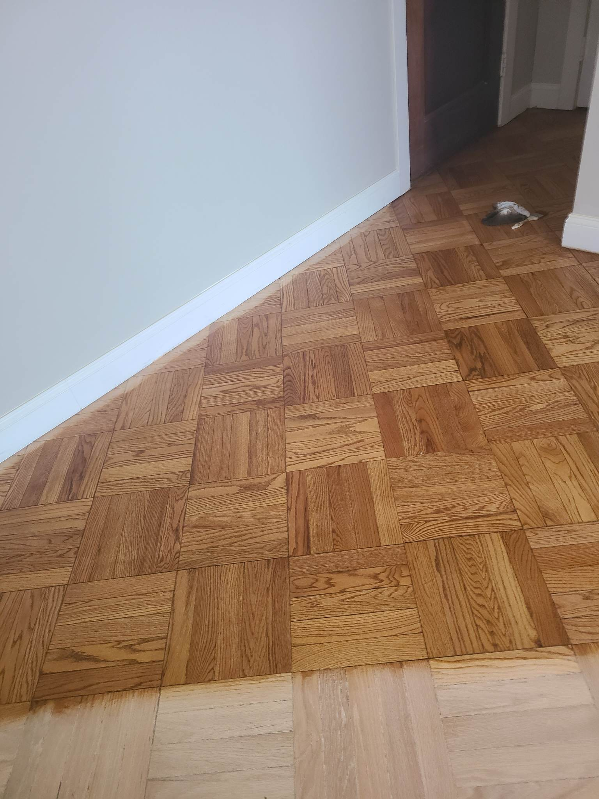
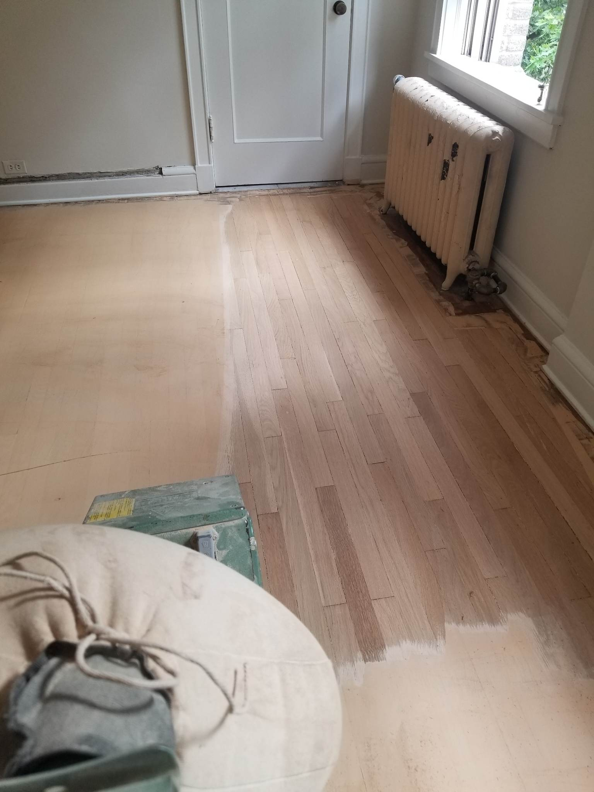

Sanding Process
Sanding is the first step to refinishing stairs and floors. Sanding can be done multiple times to ensure that all previous stain has been removed. After this, if you wish to change the stain color, a wood conditioner must be applied before applying the new stain. Finally, a finish is applied, and the process can be repeated as needed.

